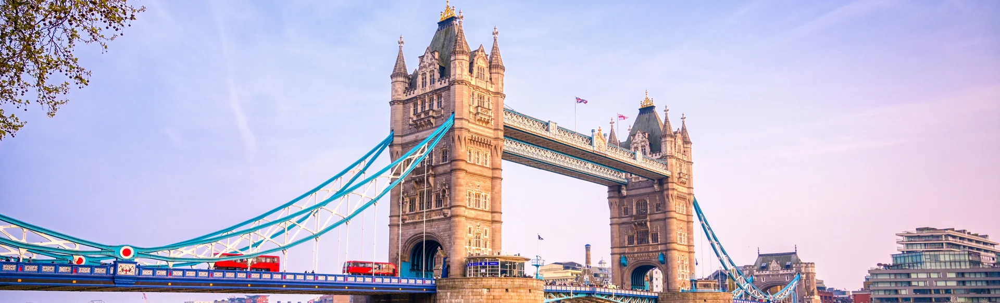

Bienvenido a Marco's Agency, tu guía oficial de la ciudad de Londres. Visita las atracciones de orden mundial de Londres, sus tiendas y restaurantes, y disfruta de los emocionantes eventos especiales, teatro, conciertos, exposiciones de arte y mucho más. Descubre lo mejor de Londres, Inglaterra, con nosotros.
